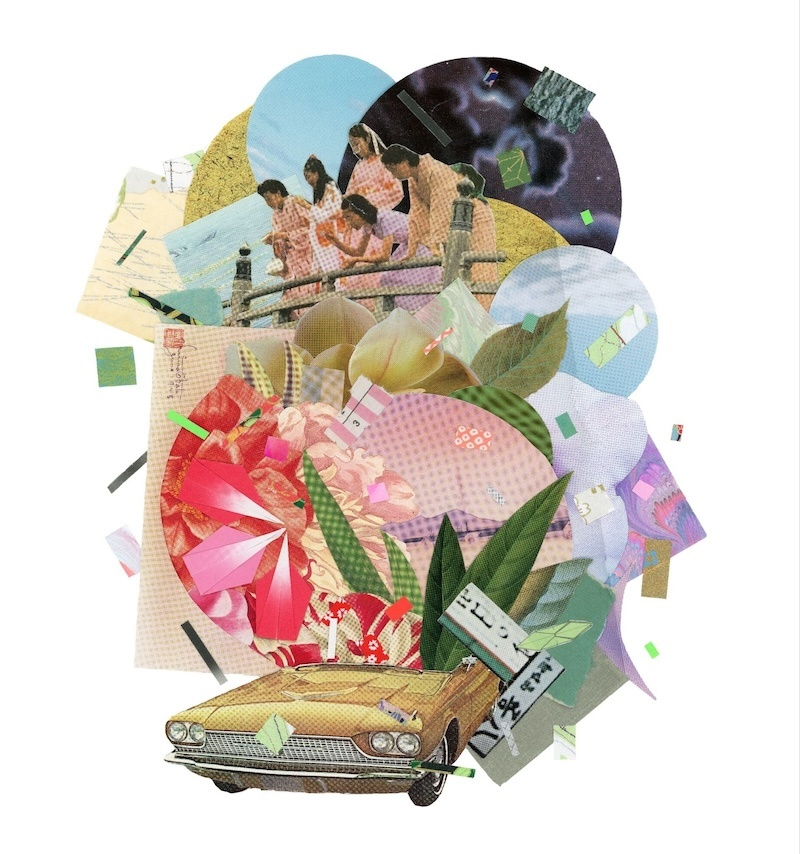
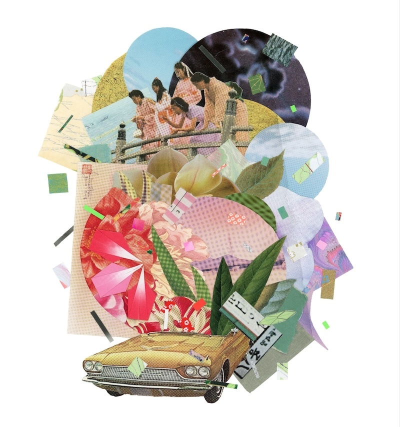
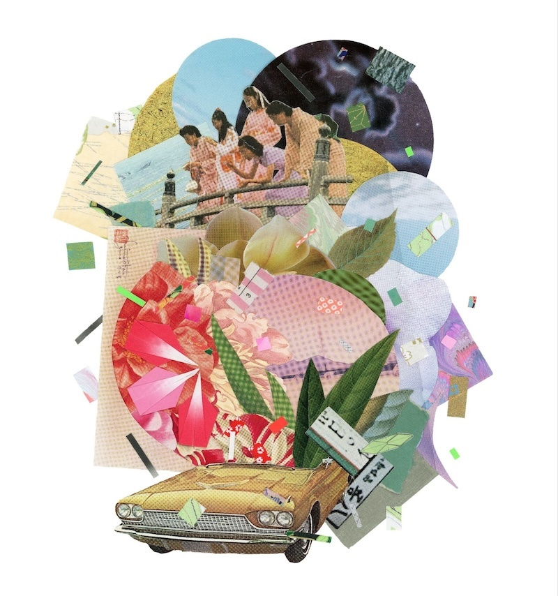
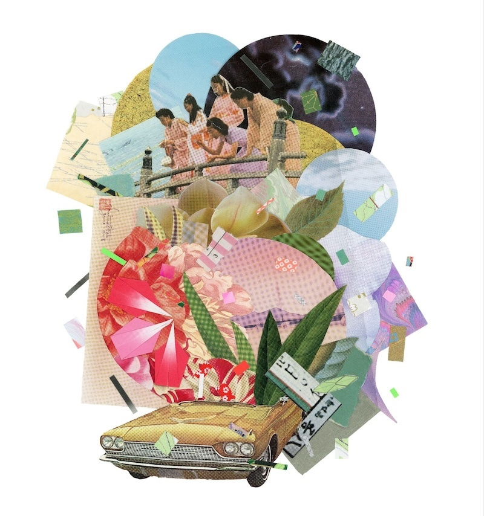

(1) her english was unusually good, 8in x 10in, collage on paper, kyoto, japan, 2016. (2) ancestors boogie, 8in x 11in, collage, san francisco, ca, 2019. (3) kinoko kween, 10in x 8in, collage, osaka, japan, 2016. (4) untitled, 8.5in x 11in, mixed media, san francisco, ca, 2019. (5) untitled (frisco flora and fauna), 10in x 8in, collage, san francisco, ca, 2020. (6) frisco tropicale, 14cm x 19cm, collage on journal cover, san francisco, ca, 2020. (7) love letter to my aunties (renshi love letter project) , 11in x 14in, collage, oakland, ca , 2023. (8) untitled, 14cm x 19cm, collage on journal cover, paris, france, 2019